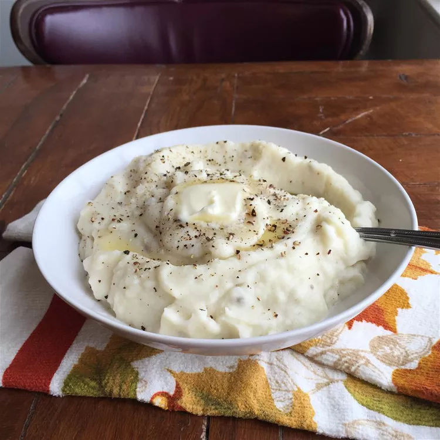

Recipe for Holiday Only Mashed Potatoes

Description
These mashed potatoes are too fattening to have on a regular basis. I only
make these on holidays, and everyone wonders what's in them that's makes
them so rich...
Ingredients
- 5 pounds red potatoes, peeled and quartered
- 1 cup heavy cream
- ½ cup butter
- Salt and pepper to taste
Steps
-
Cook sausage, ground beef, onion, and garlic in a Dutch oven over medium
heat until well browned. Stir in crushed tomatoes, tomato sauce, tomato
paste, and water. Season with sugar, 2 tablespoons parsley, basil, 1
teaspoon salt, Italian seasoning, fennel seeds, and pepper. Simmer,
covered, for about 1 1/2 hours, stirring occasionally.